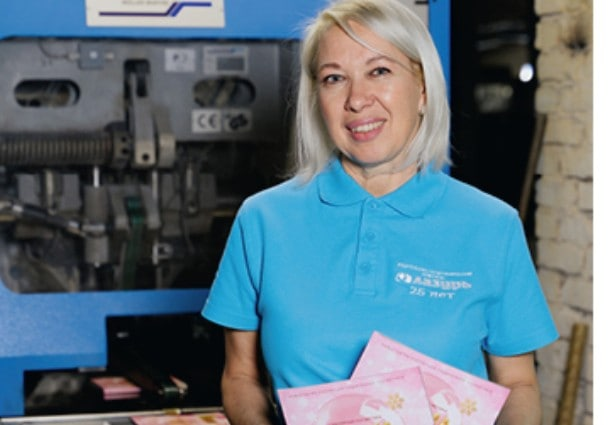
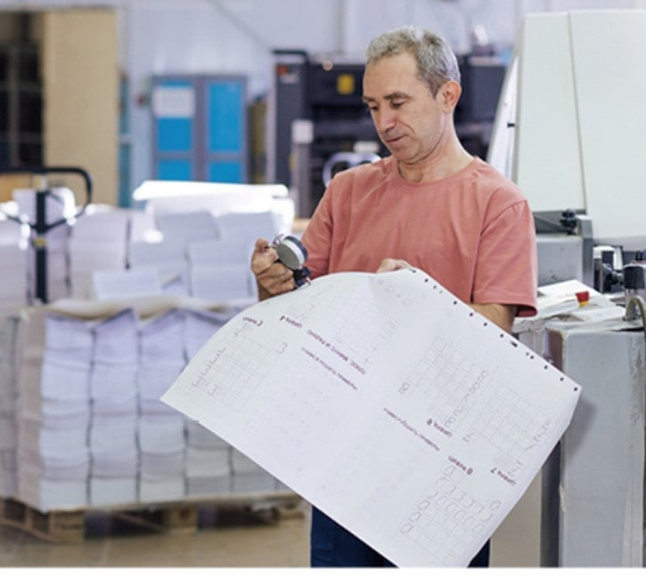

Цифровая трансформация: как меняется уральская типография «Лазурь»
 Расширение производственных мощностей и стало одной из
причин, по которой «Лазури» понадобилась единая система управления
Расширение производственных мощностей и стало одной из
причин, по которой «Лазури» понадобилась единая система управления
Цифровизация производства сегодня становится одним из ключевых инструментов повышения эффективности бизнеса. Однако на практике этот процесс редко ограничивается внедрением нового программного обеспечения или обновлением оборудования. Гораздо чаще он требует пересмотра подходов к управлению, изменения производственных процессов и адаптации персонала. Именно такой путь на протяжении последних двух лет проходит уральская типография «Лазурь».
Полный цикл на своей производственной базе
«Лазурь» выполняет практически полный спектр полиграфических работ на собственной производственной базе: цифровую, листовую и ролевую офсетную печать, изготовление упаковки, книжно-журнальной продукции, календарей, шелкографию, флексографскую печать, выпуск сувенирной продукции с нанесением изображений, а также широкий комплекс послепечатной обработки.
Сегодня продукция типографии поставляется практически во все регионы России, среди постоянных партнёров — крупные федеральные компании, в том числе «Сима-ленд».
За годы работы мы научились одинаково ответственно относиться как к небольшим заказам, так и к крупным тиражам, понимая, что для каждого клиента важны качество, сроки и надёжность. — представители типографии «Лазурь»

За цифрами системы управления — команда, которая каждый день выпускает готовую продукцию для заказчиковЗачем понадобилась единая система управления
Вместе с расширением производственных возможностей выросла и сложность управления многочисленными технологическими процессами. Это стало одной из причин внедрения единой системы управления производством.
Как отмечают в компании, самым сложным этапом проекта оказалась не техническая часть, а перестройка привычных методов работы. На многих производственных предприятиях значительная часть решений годами принимается на основе опыта отдельных специалистов, а технологические нюансы существуют в виде неформальных знаний сотрудников. Новая система потребовала стандартизации процессов, единых правил учёта и достоверных производственных данных.
Нормирование каждой операции
Одной из наиболее масштабных задач стало нормирование операций. Для каждого производственного этапа потребовалось определить реальные показатели времени выполнения, расхода материалов и производительности оборудования. Работа продолжается и сегодня, поскольку технологии постоянно развиваются, появляются новые материалы и оборудование, а нормативная база современного производства требует регулярной актуализации.

Нормативы по каждой операции — время выполнения, расход материалов, производительность оборудования — теперь сверяются по единым даннымЛюди — самая сложная часть проекта
На предприятии отмечают, что не менее серьёзным вызовом стала адаптация коллектива. Освоение специализированной информационной системы потребовало обучения сотрудников и изменения привычных рабочих процессов. Проект затронул и кадровую политику предприятия: часть специалистов оказалась не готова работать по новым принципам, поэтому компании пришлось принимать непростые кадровые решения.
Меньше зависимости от человеческого фактора
В результате внедрения новой системы предприятие получило возможность практически в режиме реального времени анализировать себестоимость продукции и структуру затрат по каждому заказу.
Мы значительно лучше понимаем структуру затрат, можем оперативно анализировать стоимость изготовления каждого заказа и принимать более взвешенные решения по ценообразованию. В условиях постоянно меняющихся цен на материалы и логистику такая гибкость становится серьёзным конкурентным преимуществом. — представители типографии «Лазурь»
Ещё одним результатом трансформации стало снижение зависимости производства от человеческого фактора. История заказов, технологические маршруты, нормативы, движение материалов и производственные показатели теперь фиксируются в единой информационной системе. Это повышает прозрачность процессов, снижает вероятность ошибок и позволяет быстрее принимать управленческие решения.
Проект без финальной точки
При этом в компании подчёркивают, что цифровую трансформацию нельзя считать завершённым проектом. Система продолжает развиваться: актуализируются нормативы, внедряются новые функции, анализируются производственные показатели и определяются направления дальнейшего повышения эффективности.
Мы планируем и дальше совершенствовать внутренние процессы, расширять возможности цифровых инструментов управления, повышать точность производственного анализа и автоматизировать новые участки работы. Полиграфическая отрасль постоянно развивается, появляются новые технологии, оборудование, материалы и требования заказчиков. Чтобы оставаться конкурентоспособными, важно не просто следовать этим изменениям, а быть готовыми к ним заранее. — представители типографии «Лазурь»
Тот же подход — и в работе с клиентами
Тот же подход применяется и в работе с клиентами. Типография регулярно обновляет корпоративный сайт, публикует материалы о новых технологиях, материалах и тенденциях полиграфической отрасли, стремясь сделать его не только витриной услуг, но и площадкой для профессиональной информации.
За два года мы убедились в простой истине: цифровизация — это не про программы, она про людей, процессы и готовность компании меняться. Это путь, который требует времени, настойчивости и иногда непростых решений. Но именно такой путь позволяет производству становиться более устойчивым, управляемым и конкурентоспособным. Именно поэтому мы продолжаем идти по нему и сегодня. — представители типографии «Лазурь»
Типография «Лазурь» — коротко
- 30+ лет опыта — полиграфическое предприятие полного цикла
- Партнёры — промышленные предприятия, торговые сети, образовательные учреждения, госорганизации и федеральные компании
- География печати — полноцветные издания Пермского края, Свердловской, Тюменской, Челябинской и других областей
- Награды — «Лучшее предприятие сферы услуг», «Лидер в бизнесе», «Европейский Гран-При за качество»
Нужна типография, которая считает каждый заказ и держит слово по срокам?
Связаться с «Лазурью» →